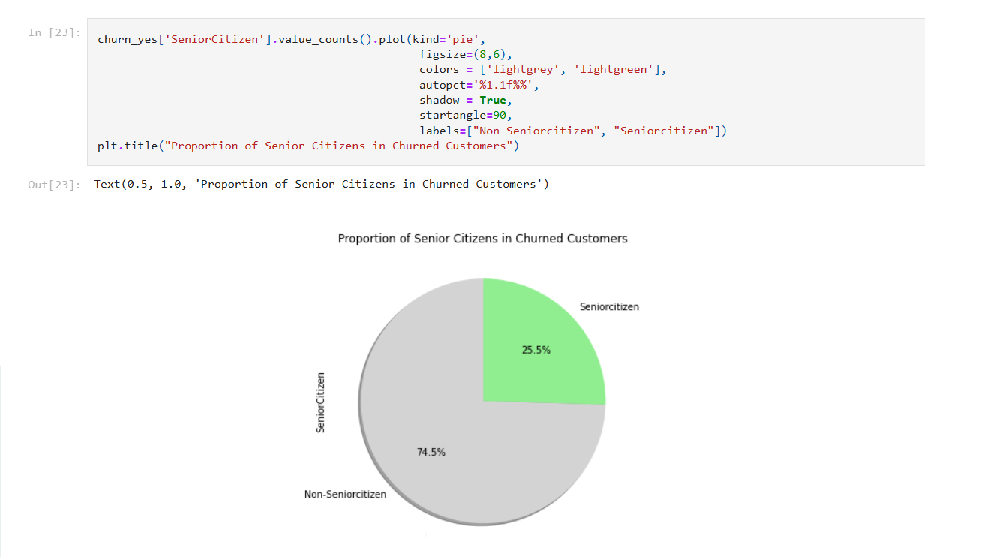

Power BI

Sales Analysis
Interactive report analysing sales data and customer preferences.
Data enthusiast with years of experience in modelling, analysing and visualising data across many domains. Microsoft-certified (Power BI Data Analyst, Fabric Data Engineer) and a Claude Certified Associate. I turn raw data into clear reports that support better decisions.
Data and BI
Platforms and tools
Geospatial
Reports and analyses that show the whole process: from data preparation and modelling, through calculations, to visualisation and insights.
Interactive report analysing sales data and customer preferences.

A report on sales, costs and margin – with a decomposition tree and a “from overview to detail” layout.

A one-page report presenting overall sales KPIs.

Customer churn analysis built in Jupyter Notebook.

A set of SQL queries created to analyse COVID-19 data.
Proper data analysis is the key to discovering new opportunities and making the right decisions. In my portfolio I present projects that solve real problems, optimise processes and support strategy.
I work with Anthropic Claude as an analytical assistant – for DAX, SQL and Python, documentation and exploring data – and connect it to my tools through MCP (Model Context Protocol) servers, for example to inspect and document Power BI semantic models. I use AI consciously and safely: as a support for analysis, never as a replacement for judgement. I verify every result against the data and do not share confidential or personal data with AI tools.
Have a question or a collaboration proposal? Get in touch.